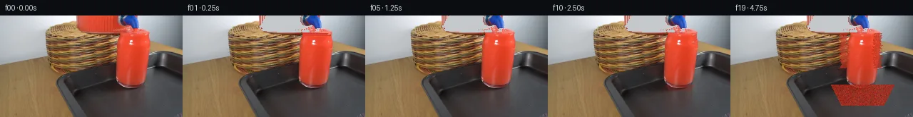

![首帧]()

Round 00
2026-11-05T20:01:23.706764+00:00像素候选变化代码 +315/−0inspection 更新
pixels c5460391ec2c0791 · code 5cc35d029cd4fc7f
查看本轮 generate.py 真实 diff
--- previous/generate.py
+++ current/generate.py
@@ -0,0 +1,315 @@
+#!/usr/bin/env python3
+"""PixelWorld-Text generation script for beverage dispenser pouring animation.
+
+Generates 20 frames showing a glass beverage dispenser pouring bright red
+liquid into a narrow-necked flask/glass on a baking tray. The flask is
+already partially full in frame 0; the animation shows the dispenser
+emptying, the glass neck filling, overflow running down the sides, and
+liquid pooling on the tray.
+
+Method: Pixel-level region manipulation based on frame-0 reference.
+Uses analytic geometry for fill levels and color blending for transitions.
+"""
+
+import numpy as np
+from PIL import Image
+from pathlib import Path
+import sys
+
+# Add workspace to path for artifact_io
+sys.path.insert(0, str(Path(__file__).parent))
+from artifact_io import save
+
+
+def load_first_frame():
+ """Load and return first_frame.png as uint8 RGB array (144, 256, 3)."""
+ return np.array(Image.open(Path(__file__).parent / "first_frame.png"))
+
+
+def get_red_liquid_color(img, num_samples=50):
+ """Sample the red liquid color from the dispenser reservoir."""
+ # Sample from dispenser reservoir interior (y=5-15, x=130-160)
+ ys = np.random.default_rng(42).integers(5, 16, num_samples)
+ xs = np.random.default_rng(42).integers(130, 161, num_samples)
+ colors = img[ys, xs].astype(np.float64)
+ mean = colors.mean(axis=0)
+ std = colors.std(axis=0)
+ return mean, std
+
+
+def get_background_color(img, y):
+ """Get the background color at a given y, sampling from left edge."""
+ # Sample left edge pixels (x=0-5)
+ colors = img[y, 0:6].astype(np.float64)
+ return colors.mean(axis=0)
+
+
+def get_glass_body_color(img, x_range=(164, 208)):
+ """Get typical glass body/liquid color from the glass interior."""
+ colors = []
+ for y in range(32, 65, 2):
+ for x in range(x_range[0], x_range[1], 2):
+ colors.append(img[y, x].astype(np.float64))
+ return np.array(colors).mean(axis=0)
+
+
+def main():
+ base = Path(__file__).parent
+ img0 = load_first_frame()
+ H, W = 144, 256
+
+ # Sample key colors
+ red_mean, red_std = get_red_liquid_color(img0)
+ # Background color varies with y (gradient)
+ # Tray color at the bottom
+ tray_color = img0[110:120, 150:200].astype(np.float64).reshape(-1, 3).mean(axis=0)
+
+ frames = np.zeros((20, H, W, 3), dtype=np.uint8)
+ frames[0] = img0.copy()
+
+ # ── Scene region definitions ──
+ # Dispenser liquid region (y=0-23, x=110-190, irregular shape)
+ # We compute the dispenser liquid mask from frame 0
+ dispenser_liquid_mask = np.zeros((H, W), dtype=bool)
+ for y in range(0, 24):
+ for x in range(100, 200):
+ r, g, b = img0[y, x]
+ if r > 160 and g < 100 and b < 80:
+ dispenser_liquid_mask[y, x] = True
+
+ # Count liquid pixels per row in dispenser
+ dispenser_row_counts = dispenser_liquid_mask.sum(axis=1) # [144]
+
+ # Glass neck region (y=25-29, x=164-177) - narrow opening
+ # Glass body region (y=30-97, x=164-207) - wider body
+ # We need per-row left and right boundaries for the glass interior
+
+ glass_left = {} # y -> left x boundary
… diff truncated; 228 more lines …